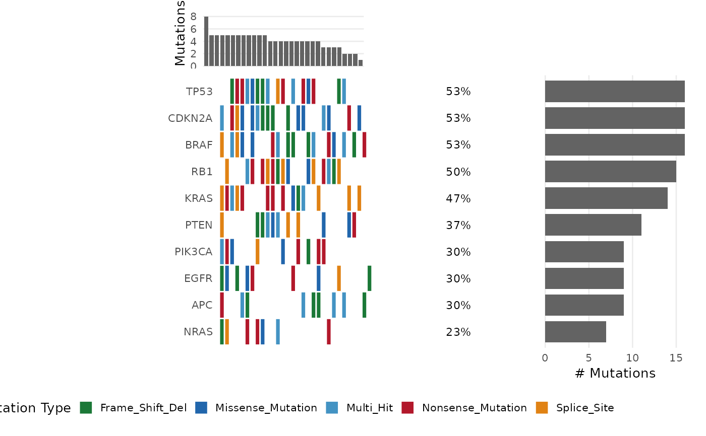

Generates a waterfall-style oncoplot showing the mutation landscape
across samples. Accepts either a simple data.frame with sample,
gene, mutation_type columns or a MAF-format data.frame.
Usage
bb_oncoplot(
data,
genes = NULL,
n_genes = 20L,
sort_by = c("frequency", "cluster"),
annotation_df = NULL,
mutation_colors = NULL,
show_pct = TRUE,
show_barplot = TRUE,
title = NULL,
border_color = "white"
)Arguments
- data
A data.frame with columns
sample,gene,mutation_type. Alternatively, a MAF-like data.frame withHugo_Symbol,Tumor_Sample_Barcode, andVariant_Classificationcolumns.- genes
Character vector. Specific genes to display. If
NULL, the topn_genesmost frequently mutated genes are shown.- n_genes
Integer. Number of top mutated genes if
genesisNULL. Default20.- sort_by
Character. How to sort samples:
"frequency"(by mutation burden) or"cluster"(by co-occurrence clustering). Default"frequency".- annotation_df
A data.frame for sample annotations (bottom tracks). Rownames must be sample identifiers. Each column becomes an annotation track.
- mutation_colors
Named character vector mapping mutation types to colors. If
NULL, a default nature-style palette is used.- show_pct
Logical. Show mutation percentage per gene on the right margin. Default
TRUE.- show_barplot
Logical. Show top (sample burden) and side (gene count) barplots. Default
TRUE.- title
Character or NULL. Plot title.
- border_color
Character or NULL. Color of tile borders. Default
"white".
Value
A ggplot2::ggplot object (composed with patchwork if barplots are shown and patchwork is available).
Details
The oncoplot encodes the mutation landscape of a cohort as a tiled grid:
columns = samples, rows = genes. Tiles are colored by mutation type.
Multi-hit genes (multiple mutation types in one sample) are labeled
"Multi_Hit".
When show_barplot = TRUE and the patchwork package is available,
the plot is composed of three panels: top barplot (mutation burden per
sample), main tile plot, and right barplot (mutations per gene).
Without patchwork, only the main tile plot is returned.
Examples
set.seed(42)
mut_data <- data.frame(
sample = sample(paste0("TCGA-", 1:30), 150, replace = TRUE),
gene = sample(c("TP53","KRAS","PIK3CA","PTEN","APC",
"BRAF","EGFR","NRAS","CDKN2A","RB1"), 150, replace = TRUE),
mutation_type = sample(c("Missense_Mutation","Nonsense_Mutation",
"Frame_Shift_Del","Splice_Site"), 150, replace = TRUE)
)
bb_oncoplot(mut_data, n_genes = 10)
